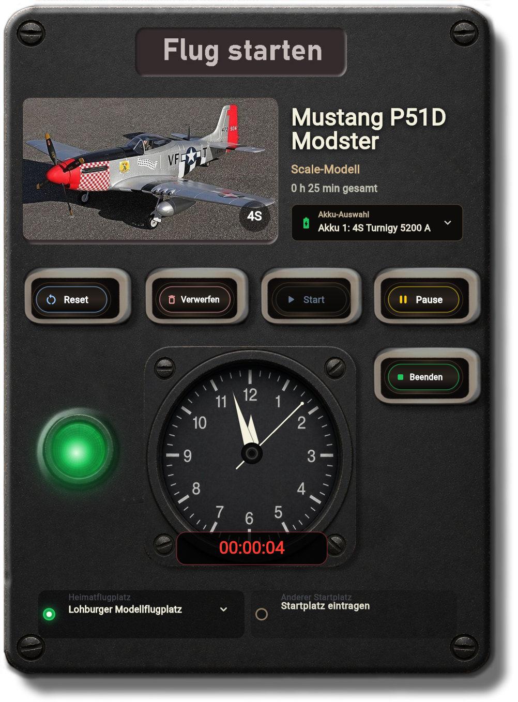
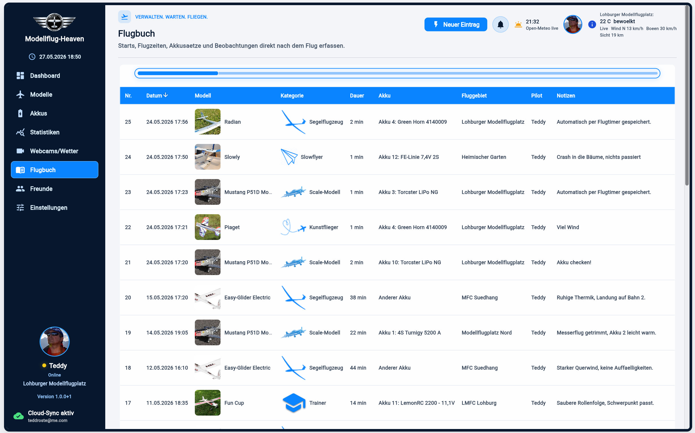
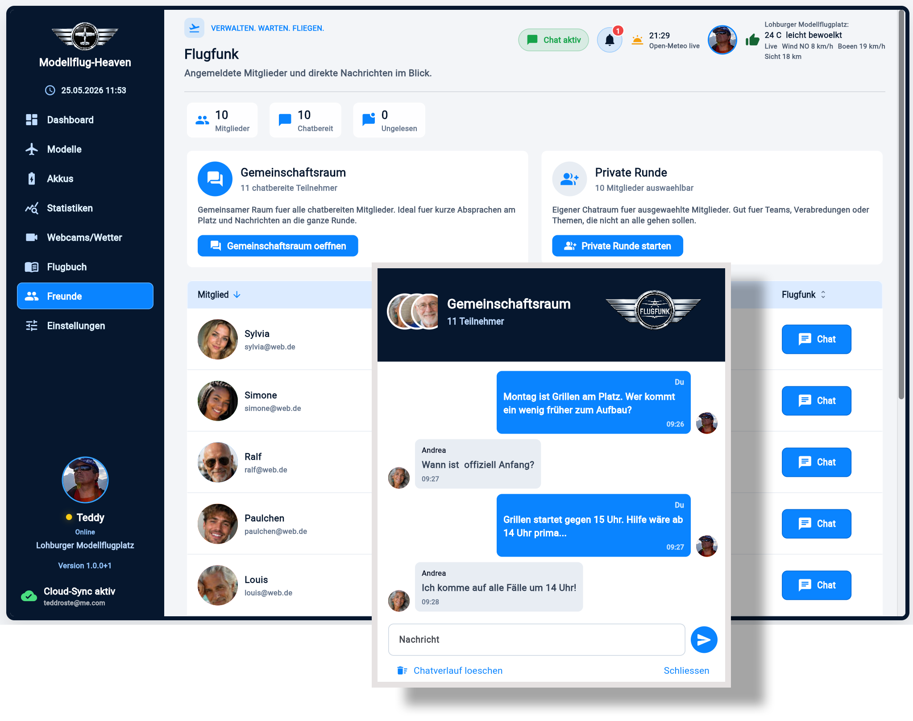
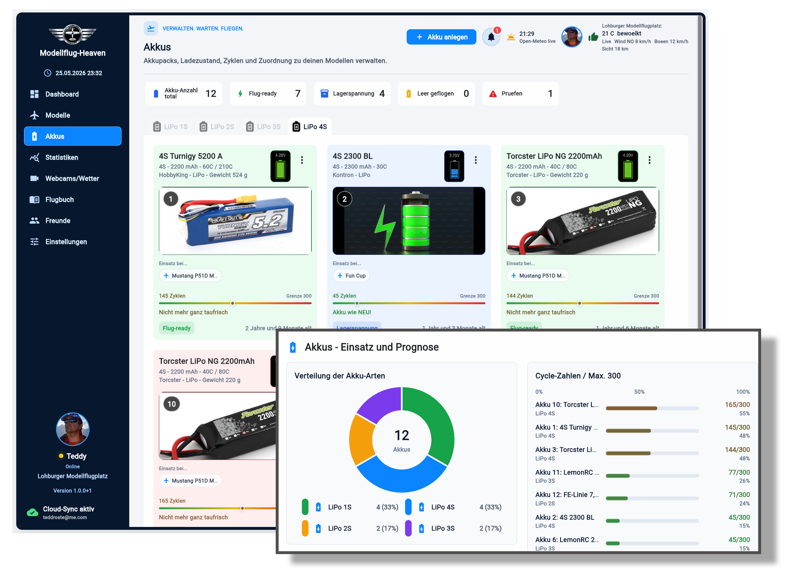

Modelle verwalten
Bilder, Flugstatus, Sender und Speicherplatz, alle Infos, Daten und Einsätze werden zentral für jedes Modellflugzeug verwaltet.
Alles bereit für den nächsten Start
Die faszinierende Welt des Flugmodellsports: Von der Modellverwaltung und Flugvorbereitung bis zur Akkupflege und Flugauswertung, alles in einer App.
Eine App für Windows, iPhone, iPad und Android-Handy
Was die App kann
Bilder, Flugstatus, Sender und Speicherplatz, alle Infos, Daten und Einsätze werden zentral für jedes Modellflugzeug verwaltet.
Saubere Dokumentation aller flugrelevanten Daten, auf Wunsch umfangreich ausgewertet: Fluglänge, Flugort, Dauer, Pilot, Modell, Erfahrungen, Akkunutzung und Notizen werden zentral verwaltet.
Akkupflege leicht gemacht: Der Ladezustand, Alter und prognostizierte Lebensdauer durch Kontrolle der Anzahl der Ladungen helfen bei Einsatz und Pflege der teuren Energieversorgung.
Live-Wetter oder mehrtägige Vorhersage für die Lieblings-Flugplätze helfen in Verbindung mit Webcams bei der Einschätzung der tatsächlichen Flugbedingungen.
Das Wetter passt, wer kommt zum Flugplatz, wer fliegt schon? Alles ist schnell geklärt durch den eingebauten Chat mit Direktnachrichten von Pilot zu Pilot.
Datenauswertungen helfen dabei, Entwicklungen zu erkennen und Tendenzen zu sehen. In welchem Zustand sind meine Akkus, mit welchem Modell fliege ich wo und wann am meisten, fliege ich mehr 3D oder ruhige Segler? Die Statistikseite beantwortet alle Fragen.
Gedacht für den Alltag
Schnelle Modellwahl plus Infos über Sender und Speicherplatz, das Wetter vor Ort, dazu die Webcam und Infos vom letzten Flug, alles nur einen Mausklick entfernt.

Modelle im Griff
Fotos vom Modell, eine Fülle von technischen Daten, der Status und vieles mehr können hier eingegeben werden. Perfekte Übersicht über jedes einzelne Modellflugzeug!

Flugzeit erfassen
Flüge können direkt im Flugbuch eingetragen werden, oder der Flugtimer wird benutzt, live während des Fluges. Hier werden alle flugrelevanten Daten erfasst und nach dem Flug automatisch ins Flugbuch übertragen, inklusive Akkunutzung. Fokus auf Fliegen, den Rest macht Modellflug-Heaven.

Entwicklung erkennen
Umfangreiche Auswertungen über Flugzeiten und Modelleinsatz machen den Fortschritt im Modellflug greifbar. Das hilft beim Planen, Vergleichen und beim Blick zurück auf die Saison.

Platz im Blick
Die in den Einstellungen hinterlegten Webcam-Adressen können mit dem passenden aktuellen Wetter und einer Wettervorhersage der nächsten Tage für die Flugplanung abgerufen werden. Eine Prognose zeigt schnell, ob der Flugtag gelingen wird.

Sauber und übersichtlich
Perfekte Dokumentation aller Flüge, entweder durch einen manuellen neuen Eintrag oder beim Fliegen automatisch durch den Flugtimer. Dazu ist die Tabelle nach Spalten sortierbar und bereit zur Aufarbeitung durch die Statistik-Seite.

Alles einstellen
Durch umfangreiche Einstellungsmöglichkeiten lässt sich das Programm im Detail anpassen.

Gemeinsam fliegen
Wer ist online, wer ist schon am Flugplatz und wer kommt später dazu? Schnelle Direktnachrichten helfen bei der Abstimmung untereinander. Und wer lieber für sich sein möchte, kann alles deaktivieren. Wäre aber schade...

Sensibel und pflegebedürftig
Übersicht, Pflege und Kontrolle über die Kraftpakete sind Voraussetzung für ein langes Akku-Leben. Das Programm hilft mit perfekter Verwaltung.

Die App-Luxusausstattung
Vom Dashboard bis zur Sicherung: Die wichtigsten Funktionen sind so angelegt, dass Flugtag, Modelle, Wetter, Freunde und Daten gut zusammenpassen.
Features im Detail
| Dashboard mit Übersicht für den Flugtag |
| Detaillierte Modellverwaltung mit Fotos, Kategorien, technischen Daten und Status |
| Akkuverwaltung mit Ladezustand, Zyklen, Alter und Modell-Zuordnung |
| Flugbuch für Starts, Flugzeit, Ort, Pilot, Akkusätze und Notizen |
| Flugtimer mit automatischem Eintrag des Fluges ins Flugbuch |
| Statistiken zu Flugstunden, Flügen, Akkus, Modellen und Modellkategorien |
| Webcam-Bereich mit Livebild oder Videostreams mit dazu passender Wettervorhersage |
| Live-Wetterdaten mit Wind, Böen, Temperatur, Sichtweite, Regenrisiko, Sonnenzeiten und Vorhersage für die nächste Woche |
| Flugwetter-Einschätzung: gut, solide oder vorsichtig planen |
| Luftdruck-Verlauf mit historischem Verlauf und Ausblick |
| Einfach zu bedienende Chat-Funktion für die schnelle Absprache zwischendurch. Info-Austausch zwischen zwei, mehreren oder allen angemeldeten Mitgliedern (z.B. für Rundmails des Vorstandes). Direkt, simpel, schnell! Mit Benachrichtigung. |
| Benachrichtigungen über Reparaturen, Akku-Grenzwerte, gute Flugbedingungen und Freunde |
| Pilotenprofil mit Foto, Heimatflugplatz, Verein, Sendern, Fluggebieten und Versicherungsnachweis |
| Cloud-Synchronisation zwischen allen angemeldeten Geräten oder lokale Speicherung, falls Cloud oder Internet gerade nicht verfügbar sind |
| Manuelle oder automatische Sicherung, wenn gewünscht, täglich |
| Privatsphäre oder volle Freigabe aller Features: In den Einstellungen ist alles leicht zu regeln. |
Fair und transparent
Programm-Adresse im Browser aufrufen und nach Registrierung loslegen, keine Installation, keine Werbung. Man ist eben im Modellflug-Heaven...
Einfach ein Konto anlegen und sofort das Programm 30 Tage auf Herz und Nieren testen bei vollem Funktionsumfang. Keine Verpflichtung, kein Abo, keine automatische, kostenpflichtige Verlängerung! Danach das Programm für einmalig 19,90 Euro weiter nutzen.
Es ist keine Installation notwendig, das Programm läuft im Browser unter Windows sowie auf iPhone, iPad, Android-Handys und Mac-Rechnern.
Natürlich ist die Nutzung auf mehreren Geräten mit einem Konto möglich und sinnvoll: Flüge am Flugplatz mit dem Programm auf dem iPhone oder iPad tracken und zuhause am Windows-Rechner den Flug nachbearbeiten, mit Modellflug-Heaven kein Problem!
Alle Daten sind absolut privat und werden nur im Konto des Nutzers gespeichert. Eine Weitergabe von Daten ist garantiert ausgeschlossen.
Zum Programm